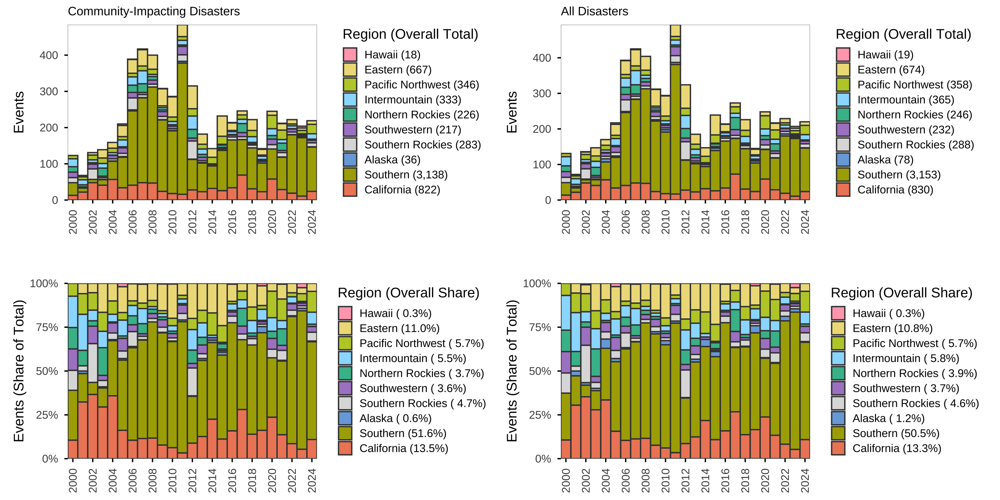
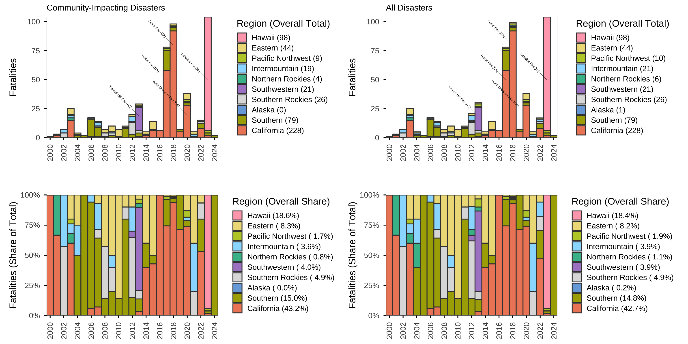
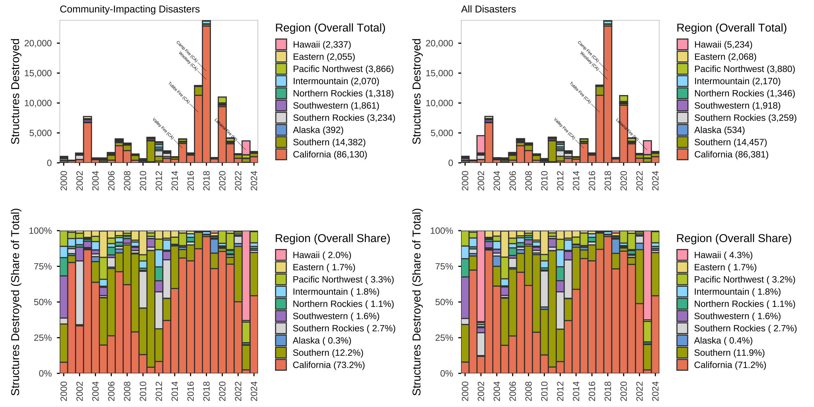
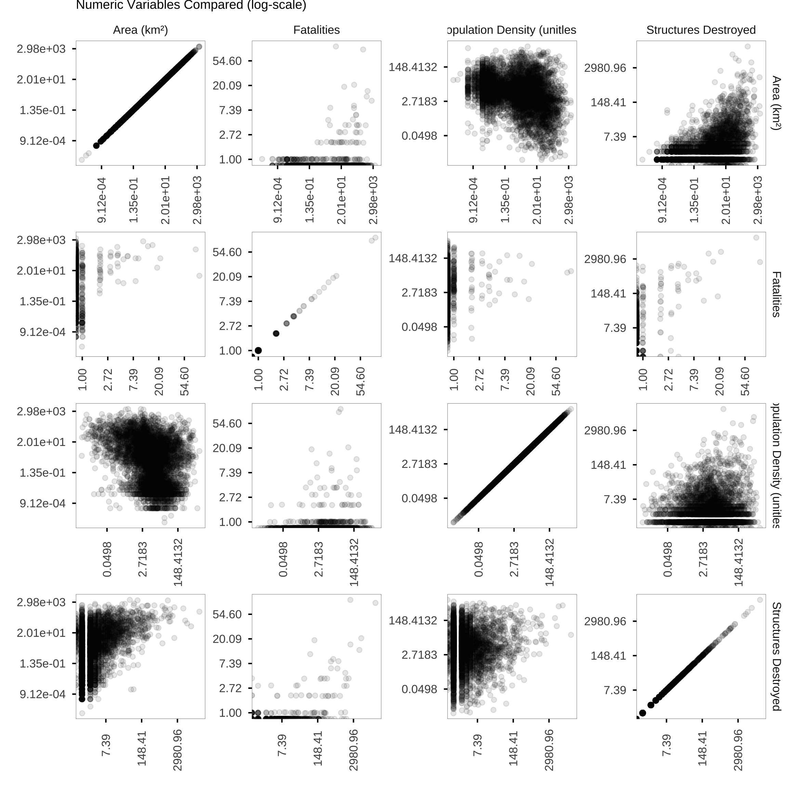
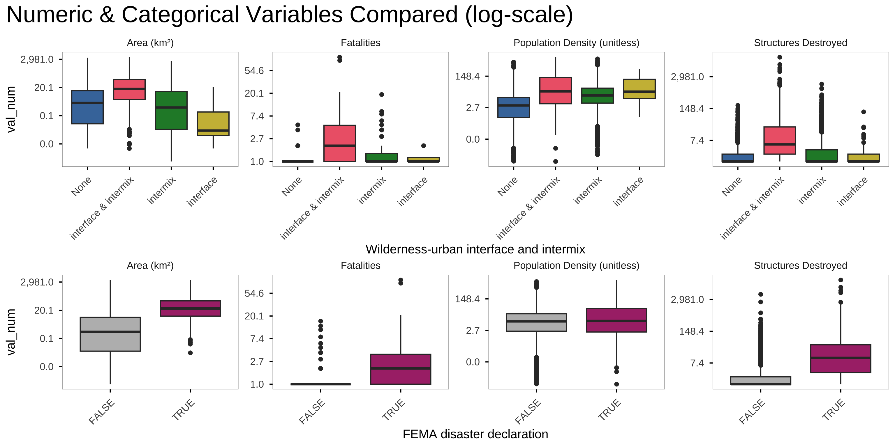
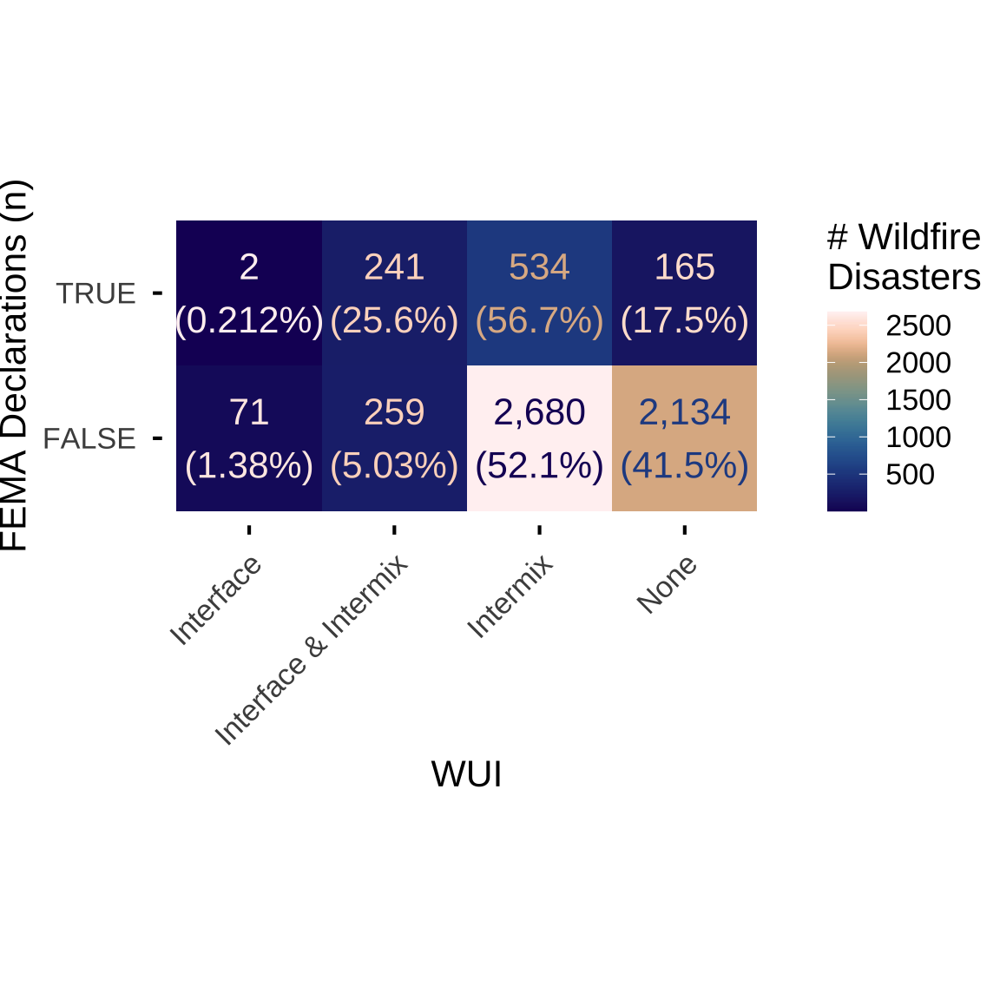
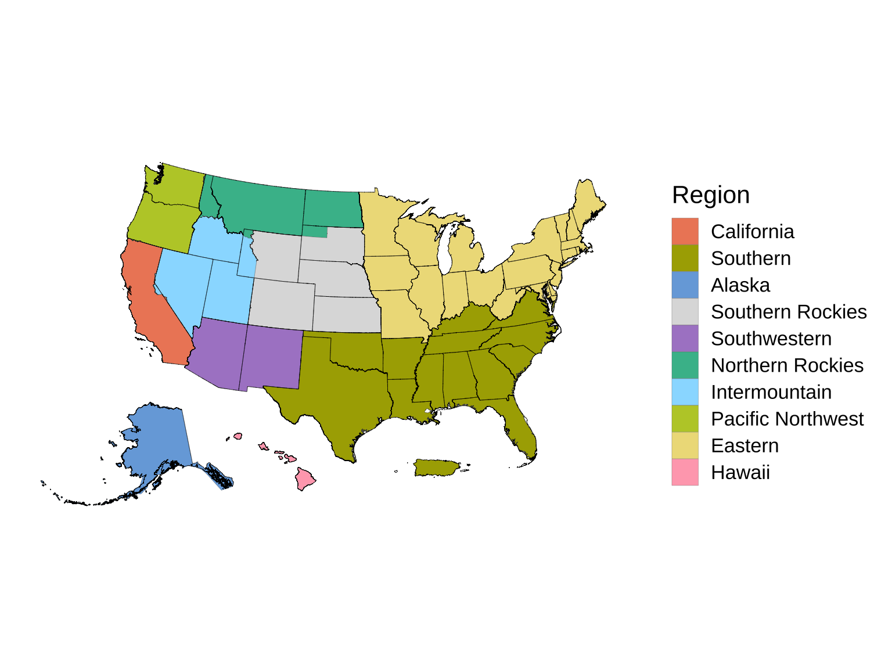

| Column counts | |||||||||||
|---|---|---|---|---|---|---|---|---|---|---|---|
| N (Percent of total in region) | |||||||||||
| Nationwide | Alaska | California | Eastern | Hawaii | Intermountain | Northern Rockies | Pacific Northwest | Southern | Southern Rockies | Southwestern | |
| Count | 6,086 | 36 | 822 | 667 | 18 | 333 | 226 | 346 | 3,138 | 283 | 217 |
| Declared Emergency | 942 ( 15.5%) | 11 ( 30.6%) | 217 ( 26.4%) | 5 ( 0.7%) | 15 ( 83.3%) | 95 ( 28.5%) | 46 ( 20.4%) | 167 ( 48.3%) | 205 ( 6.5%) | 86 ( 30.4%) | 95 ( 43.8%) |
| Fatalities per 100K | 0.159 | 0.000 | 0.577 | 0.034 | 6.734 | 0.240 | 0.179 | 0.078 | 0.066 | 0.216 | 0.227 |
| Mean Fire Size (km²) | 43.913 | 144.340 | 94.200 | 3.041 | 24.157 | 108.464 | 91.432 | 127.194 | 12.228 | 60.104 | 117.410 |
| WUI | |||||||||||
| WUI Interface Fires | 573 ( 9.4%) | 0 ( 0.0%) | 170 ( 20.7%) | 38 ( 5.7%) | 11 ( 61.1%) | 34 ( 10.2%) | 16 ( 7.1%) | 58 ( 16.8%) | 193 ( 6.2%) | 28 ( 9.9%) | 25 ( 11.5%) |
| WUI Intermix Fires | 3,714 ( 61.0%) | 1 ( 2.8%) | 581 ( 70.7%) | 369 ( 55.3%) | 15 ( 83.3%) | 156 ( 46.8%) | 91 ( 40.3%) | 220 ( 63.6%) | 2,001 ( 63.8%) | 151 ( 53.4%) | 129 ( 59.4%) |
| WUI Any Fires | 500 ( 8.2%) | 0 ( 0.0%) | 162 ( 19.7%) | 19 ( 2.8%) | 11 ( 61.1%) | 33 ( 9.9%) | 15 ( 6.6%) | 57 ( 16.5%) | 151 ( 4.8%) | 27 ( 9.5%) | 25 ( 11.5%) |
| Missing WUI | 0 ( 0.0%) | 0 ( 0.0%) | 0 ( 0.0%) | 0 ( 0.0%) | 0 ( 0.0%) | 0 ( 0.0%) | 0 ( 0.0%) | 0 ( 0.0%) | 0 ( 0.0%) | 0 ( 0.0%) | 0 ( 0.0%) |
| Missingness | |||||||||||
| Missing Ignition Date | 0 ( 0.0%) | 0 ( 0.0%) | 0 ( 0.0%) | 0 ( 0.0%) | 0 ( 0.0%) | 0 ( 0.0%) | 0 ( 0.0%) | 0 ( 0.0%) | 0 ( 0.0%) | 0 ( 0.0%) | 0 ( 0.0%) |
| Missing Containment Date | 5,037 ( 82.8%) | 27 ( 75.0%) | 375 ( 45.6%) | 665 ( 99.7%) | 7 ( 38.9%) | 241 ( 72.4%) | 181 ( 80.1%) | 196 ( 56.6%) | 2,998 ( 95.5%) | 204 ( 72.1%) | 143 ( 65.9%) |
| Missing Civilian Fatalities | 5,839 ( 95.9%) | 35 ( 97.2%) | 645 ( 78.5%) | 648 ( 97.2%) | 17 ( 94.4%) | 328 ( 98.5%) | 226 (100.0%) | 335 ( 96.8%) | 3,110 ( 99.1%) | 279 ( 98.6%) | 216 ( 99.5%) |
| Missing Evacuations | 5,753 ( 94.5%) | 30 ( 83.3%) | 697 ( 84.8%) | 658 ( 98.7%) | 17 ( 94.4%) | 298 ( 89.5%) | 212 ( 93.8%) | 287 ( 82.9%) | 3,092 ( 98.5%) | 257 ( 90.8%) | 205 ( 94.5%) |
| Missing Structures Destroyed | 343 ( 5.6%) | 3 ( 8.3%) | 18 ( 2.2%) | 32 ( 4.8%) | 8 ( 44.4%) | 35 ( 10.5%) | 19 ( 8.4%) | 75 ( 21.7%) | 83 ( 2.6%) | 28 ( 9.9%) | 42 ( 19.4%) |
WFBZ Summaries
Summary Statistics
Community-Impacting Fires
| Column sums | |||||||||||
|---|---|---|---|---|---|---|---|---|---|---|---|
| N (Percent of nationwide) | |||||||||||
| Nationwide | Alaska | California | Eastern | Hawaii | Intermountain | Northern Rockies | Pacific Northwest | Southern | Southern Rockies | Southwestern | |
| Structures destroyed | 117,645 (100.0%) | 392 (0.3%) | 86,130 (73.2%) | 2,055 (1.7%) | 2,337 (2.0%) | 2,070 (1.8%) | 1,318 (1.1%) | 3,866 (3.3%) | 14,382 (12.2%) | 3,234 (2.7%) | 1,861 (1.6%) |
| Structures threatened | 338,989 (100.0%) | 1,541 (0.5%) | 239,816 (70.7%) | 2,068 (0.6%) | 2 (0.0%) | 10,097 (3.0%) | 1,854 (0.5%) | 21,449 (6.3%) | 42,713 (12.6%) | 4,775 (1.4%) | 14,674 (4.3%) |
| Civilian fatalities (best) | 528 (100.0%) | 0 (0.0%) | 228 (43.2%) | 44 (8.3%) | 98 (18.6%) | 19 (3.6%) | 4 (0.8%) | 9 (1.7%) | 79 (15.0%) | 26 (4.9%) | 21 (4.0%) |
| Total fatalities | 532 (100.0%) | 1 (0.2%) | 219 (41.2%) | 44 (8.3%) | 98 (18.4%) | 22 (4.1%) | 4 (0.8%) | 14 (2.6%) | 81 (15.2%) | 28 (5.3%) | 21 (3.9%) |
| Civilian injuries | 160 (100.0%) | 6 (3.8%) | 72 (45.0%) | 7 (4.4%) | 0 (0.0%) | 7 (4.4%) | 0 (0.0%) | 11 (6.9%) | 48 (30.0%) | 9 (5.6%) | 0 (0.0%) |
| Total injuries | 5,518 (100.0%) | 160 (2.9%) | 2,958 (53.6%) | 101 (1.8%) | 18 (0.3%) | 446 (8.1%) | 344 (6.2%) | 621 (11.3%) | 294 (5.3%) | 264 (4.8%) | 312 (5.7%) |
| Civilian evacuations | 1,031,083 (100.0%) | 2,939 (0.3%) | 846,827 (82.1%) | 781 (0.1%) | 6,000 (0.6%) | 19,785 (1.9%) | 1,948 (0.2%) | 72,902 (7.1%) | 26,544 (2.6%) | 44,764 (4.3%) | 8,593 (0.8%) |
| Total evacuations | 1,032,368 (100.0%) | 2,939 (0.3%) | 846,892 (82.0%) | 781 (0.1%) | 6,000 (0.6%) | 19,835 (1.9%) | 1,968 (0.2%) | 73,452 (7.1%) | 27,119 (2.6%) | 44,789 (4.3%) | 8,593 (0.8%) |
All Fires
| Column counts | |||||||||||
|---|---|---|---|---|---|---|---|---|---|---|---|
| N (Percent of total in region) | |||||||||||
| Nationwide | Alaska | California | Eastern | Hawaii | Intermountain | Northern Rockies | Pacific Northwest | Southern | Southern Rockies | Southwestern | |
| Count | 6,243 | 78 | 830 | 674 | 19 | 365 | 246 | 358 | 3,153 | 288 | 232 |
| Declared Emergency | 947 ( 15.2%) | 12 ( 15.4%) | 218 ( 26.3%) | 5 ( 0.7%) | 15 ( 78.9%) | 95 ( 26.0%) | 47 ( 19.1%) | 168 ( 46.9%) | 205 ( 6.5%) | 86 ( 29.9%) | 96 ( 41.4%) |
| Fatalities per 100K | 0.160 | 0.137 | 0.577 | 0.034 | 6.734 | 0.265 | 0.268 | 0.086 | 0.066 | 0.216 | 0.227 |
| Mean Fire Size (km²) | 45.211 | 156.921 | 94.419 | 3.016 | 24.157 | 104.590 | 88.474 | 128.293 | 12.683 | 59.930 | 111.290 |
| WUI | |||||||||||
| WUI Interface Fires | 573 ( 9.2%) | 0 ( 0.0%) | 170 ( 20.5%) | 38 ( 5.6%) | 11 ( 57.9%) | 34 ( 9.3%) | 16 ( 6.5%) | 58 ( 16.2%) | 193 ( 6.1%) | 28 ( 9.7%) | 25 ( 10.8%) |
| WUI Intermix Fires | 3,714 ( 59.5%) | 1 ( 1.3%) | 581 ( 70.0%) | 369 ( 54.7%) | 15 ( 78.9%) | 156 ( 42.7%) | 91 ( 37.0%) | 220 ( 61.5%) | 2,001 ( 63.5%) | 151 ( 52.4%) | 129 ( 55.6%) |
| WUI Any Fires | 500 ( 8.0%) | 0 ( 0.0%) | 162 ( 19.5%) | 19 ( 2.8%) | 11 ( 57.9%) | 33 ( 9.0%) | 15 ( 6.1%) | 57 ( 15.9%) | 151 ( 4.8%) | 27 ( 9.4%) | 25 ( 10.8%) |
| Missing WUI | 0 ( 0.0%) | 0 ( 0.0%) | 0 ( 0.0%) | 0 ( 0.0%) | 0 ( 0.0%) | 0 ( 0.0%) | 0 ( 0.0%) | 0 ( 0.0%) | 0 ( 0.0%) | 0 ( 0.0%) | 0 ( 0.0%) |
| Missingness | |||||||||||
| Missing Ignition Date | 0 ( 0.0%) | 0 ( 0.0%) | 0 ( 0.0%) | 0 ( 0.0%) | 0 ( 0.0%) | 0 ( 0.0%) | 0 ( 0.0%) | 0 ( 0.0%) | 0 ( 0.0%) | 0 ( 0.0%) | 0 ( 0.0%) |
| Missing Containment Date | 5,186 ( 83.1%) | 68 ( 87.2%) | 379 ( 45.7%) | 672 ( 99.7%) | 8 ( 42.1%) | 273 ( 74.8%) | 200 ( 81.3%) | 207 ( 57.8%) | 3,013 ( 95.6%) | 209 ( 72.6%) | 157 ( 67.7%) |
| Missing Civilian Fatalities | 5,991 ( 96.0%) | 75 ( 96.2%) | 651 ( 78.4%) | 655 ( 97.2%) | 18 ( 94.7%) | 359 ( 98.4%) | 246 (100.0%) | 347 ( 96.9%) | 3,125 ( 99.1%) | 284 ( 98.6%) | 231 ( 99.6%) |
| Missing Evacuations | 5,905 ( 94.6%) | 70 ( 89.7%) | 704 ( 84.8%) | 664 ( 98.5%) | 18 ( 94.7%) | 329 ( 90.1%) | 232 ( 94.3%) | 299 ( 83.5%) | 3,107 ( 98.5%) | 262 ( 91.0%) | 220 ( 94.8%) |
| Missing Structures Destroyed | 349 ( 5.6%) | 5 ( 6.4%) | 18 ( 2.2%) | 32 ( 4.7%) | 8 ( 42.1%) | 35 ( 9.6%) | 22 ( 8.9%) | 76 ( 21.2%) | 83 ( 2.6%) | 28 ( 9.7%) | 42 ( 18.1%) |
| Column sums | |||||||||||
|---|---|---|---|---|---|---|---|---|---|---|---|
| N (Percent of nationwide) | |||||||||||
| Nationwide | Alaska | California | Eastern | Hawaii | Intermountain | Northern Rockies | Pacific Northwest | Southern | Southern Rockies | Southwestern | |
| Structures destroyed | 121,247 (100.0%) | 534 (0.4%) | 86,381 (71.2%) | 2,068 (1.7%) | 5,234 (4.3%) | 2,170 (1.8%) | 1,346 (1.1%) | 3,880 (3.2%) | 14,457 (11.9%) | 3,259 (2.7%) | 1,918 (1.6%) |
| Structures threatened | 344,661 (100.0%) | 2,331 (0.7%) | 239,824 (69.6%) | 2,092 (0.6%) | 2 (0.0%) | 10,148 (2.9%) | 1,862 (0.5%) | 25,469 (7.4%) | 43,238 (12.5%) | 4,932 (1.4%) | 14,763 (4.3%) |
| Civilian fatalities (best) | 534 (100.0%) | 1 (0.2%) | 228 (42.7%) | 44 (8.2%) | 98 (18.4%) | 21 (3.9%) | 6 (1.1%) | 10 (1.9%) | 79 (14.8%) | 26 (4.9%) | 21 (3.9%) |
| Total fatalities | 538 (100.0%) | 2 (0.4%) | 219 (40.7%) | 44 (8.2%) | 98 (18.2%) | 24 (4.5%) | 6 (1.1%) | 15 (2.8%) | 81 (15.1%) | 28 (5.2%) | 21 (3.9%) |
| Civilian injuries | 160 (100.0%) | 6 (3.8%) | 72 (45.0%) | 7 (4.4%) | 0 (0.0%) | 7 (4.4%) | 0 (0.0%) | 11 (6.9%) | 48 (30.0%) | 9 (5.6%) | 0 (0.0%) |
| Total injuries | 5,712 (100.0%) | 265 (4.6%) | 2,972 (52.0%) | 101 (1.8%) | 18 (0.3%) | 479 (8.4%) | 361 (6.3%) | 630 (11.0%) | 299 (5.2%) | 267 (4.7%) | 320 (5.6%) |
| Civilian evacuations | 1,032,645 (100.0%) | 3,048 (0.3%) | 848,260 (82.1%) | 786 (0.1%) | 6,000 (0.6%) | 19,800 (1.9%) | 1,948 (0.2%) | 72,902 (7.1%) | 26,544 (2.6%) | 44,764 (4.3%) | 8,593 (0.8%) |
| Total evacuations | 1,033,930 (100.0%) | 3,048 (0.3%) | 848,325 (82.0%) | 786 (0.1%) | 6,000 (0.6%) | 19,850 (1.9%) | 1,968 (0.2%) | 73,452 (7.1%) | 27,119 (2.6%) | 44,789 (4.3%) | 8,593 (0.8%) |
Variables over Time
Number of Fire Disasters per Region over Time

Number of Fatalities per Region over Time
The five deadliest fires in our data set are labeled.

Number of Structures Destroyed per Region over Time
The five fires in our data set with the most destroyed structures are labeled.

Number of FEMA Declarations per Region over Time

Burned Area over Time

Average Fire Size over Time

Alaska has quite an outlier for community-intersecting fires in 2004. This was the year of the Boundary Fire NE of Fairbanks, which reached 912 km2. While that’s not the largest fire in our data set, it was the only community-intersecting fire in our data set that year in Alaska.
Correlations
Numeric Values Compared

Numeric & Categorical Values Compared

Categorical Values Compared

Fire Season Timing

Reference
Regions Mapped
